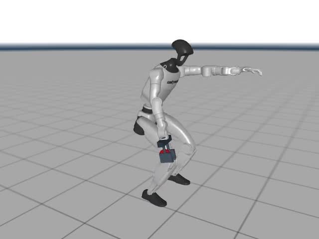

The first closure was intentionally skipped. The gripper nudges the apple 2.29 cm, then the G1 re-aims and lifts it on the second attempt.
Playback could not start. Open the lift still below to inspect the grasp.
